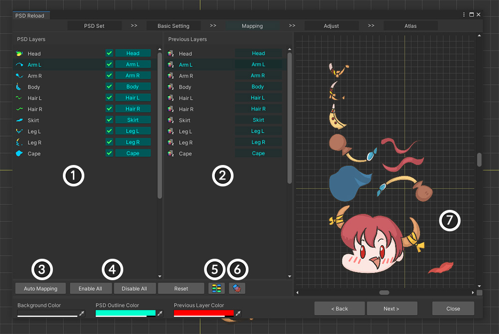

AnyPortrait > マニュアル > 「Secondary Atlas」の作成
「Secondary Atlas」の作成
1.4.0
ゲームキャラクターをレンダリングするには、基本的なテクスチャに加えて、さまざまな種類のテクスチャが必要になることもあります。
物理的特性、バンプ、マスク、特殊効果などをテクスチャに適用してリソースを作成し、これをレンダリングに利用したりします。
あるいは、テクスチャを置き換えてキャラクターの外観を変更することもできます。 （関連ページ）
これらのテクスチャを「Secondary Texture」と呼びます。
特に、複数のレイヤーが1つのテクスチャにまとめられた「Secondary Atlas」を作成することがよくあります。
このとき、「すべてのテクスチャが同じ構造のAtlasを持つこと」という条件を満たす必要があります。
「AnyPortrait v1.4.0」に新しく追加された機能である「Secondary Atlasを作成する」機能を利用すれば、便利に同じ構造のAtlasテクスチャを別のPSDファイルから作成することが可能です。
この機能は「PSDファイルの再インポート」ダイアログに追加されているため、その機能を知っておくと適切に使用できます。
説明に先立ち、下記のマニュアルをあらかじめお読みください。
- PSDファイルの読み込み
- PSDファイルの再インポート
参考
この機能は、「v1.4.0」の以前のバージョンと互換性がありません。
以前のバージョンからPSDをインポートしてAtlasを作成した場合は、「PSDファイルの再インポート」機能を使用して、現在のバージョンに合わせてAtlasデータを生成する必要があります。
「Secondary Atlas」の作成

説明のために「原本となるPSDファイル」と「Secondary TextureになるPSDファイル」を用意しました。
2つのPSDファイルには同じ名前と構成のレイヤーがあります。
「Secondary Atlas」を作成するには、基準となるPSDファイルと可能な同じまたはレイヤー構成を持つ必要があります。
もちろん、それ以降のマッピング機能では全く同じでなくてもテクスチャ生成は可能ですが、レイヤー名まで同じようにファイルを準備することをお勧めします。

「Secondary Atlas」を作成するためには、基準となる「Main Atlas」を最初に作成する必要があります。
(1) 「Import PSD File」機能を使用して (2) 「Main Atlas」を作成します。

完成したキャラクターです。
それでは、このキャラクターのUV情報と互換性のある「Secondary Atlas」を作成しましょう。
(1) 「Import PSD File」ボタンを押します。
(2) 「Reload PSD File」ボタンを押します。
ダイアログが開くと、「Main Atlas」を作成しながら作成された「PSDセット」が登録されます。
(1) 対応する「PSD セット」を選択します。
(2) 「Main Atlas」に関する情報を確認することができます。
(3) 「Make Secondary PSD Set」ボタンを押します。
「PSDセット」が見えない、または「Secondary PSDセット」を生成できません！
v1.4.0より前のバージョンからPSDファイルをインポートした場合、このプロセスは実行できません。
回避策は、同じPSDファイルをそのまま再インポートして「Main Atlas」を再生成することです。
同じPSDファイルを再インポートする方法については、関連ページをご覧ください。

選択した「PSDセット」の情報を利用してAtlasを生成する「Secondary PSDセット」が生成され、リストに追加されました。
(1) 「Secondary PSD Set」を選択します。
(2) 「Secondary Atlas」で作成する「2番目のPSDファイル」を開きます。 （メインアトラスで作成した最初のPSDファイルを開くのではありませんので注意してください！）
(3) PSDファイル情報と以前の「Bake」情報が表示されます。 現在、「Secondary Atlas」を作成したことがないため、Bake情報はありません。
(4) 「Next」ボタンを押します。
(1) オリジナルとなるAtlasを持つ画像が表示されます。
(2) 以前「Bake」の履歴が表示されます。
(3) ［選択したオリジナルアトラスの画像］と［Secondary PSDファイル］が同時に表示されます。
(4) 画面にPSDファイルや画像がどのように表示されるかを決定するボタンです。
(5) ファイルがすべて正しくロードされたことを確認したら、「Next」ボタンを押します。

「Secondary PSDファイル」のレイヤーと「Main Atlasのオリジナルレイヤー」をリンクする手順です。
1. Secondary PSDファイルのレイヤー : Bakeかどうか、どのソースレイヤーを参照するかを設定できます。
2. 原稿となるメインアトラスのレイヤー情報 : 原稿となるPSDセットに保存されたデータに基づいて原画レイヤーが表示されます。
3. Auto Mapping : 名前と順序に基づいてレイヤーを自動的にリンクします。
4. Enable All/Disable All/Reset : すべての 「Secondary PSDセット」のレイヤーを対象に、Bake か、ソース参照かを変更します。
5. 接続状態を色で表示 : 色を使用して、両方の接続状態を見やすく表示します。
6. アウトラインとしてプレビュー : この機能をオンにすると、プレビュー画面で選択したターゲットがアウトラインとしてレンダリングされます。
7. プレビュー画面 : 選択したPSDレイヤーの画像に関連付けられたオリジナルのAtlasを出力します。
デフォルトでは、名前に基づいて自動的にリンクされます。
ただし、接続が正しくない場合は、直接レイヤー間の接続を再確立する必要があります。
(1) 接続を変更したい「Secondary PSDファイル」のレイヤーの「接続ボタン」を押します。
(2) 接続したい対象を選択します。
接続するか有効にするかを設定したら、 (3) 「Next」ボタンを押して次の手順に進みます。

このステップは面倒ですが、非常に重要です。
これは、同じUVを共有するために各レイヤーの位置とサイズを補正する必要があるためです。
この画面は次のように構成されています。
1. Secondary PSDファイルのレイヤー : Bakeの対象となるPSDレイヤーです。
2. プレビュー画面 : 選択したレイヤーとオリジナルレイヤーが出力されます。 この画面を見ながら位置とサイズを調整する必要があります。 マウスホイールクリック、ドラッグなどで移動、拡大などができます。
3. Rendering/Order : プレビュー画面でのレンダリング方法と出力順序を変更します。
4. Position Offset : 選択した 「Secondary PSD レイヤー」の位置を変更するツールです。
5. Prev Atlas Scale : 元のAtlas に対して現在の PSD ファイルに設定する必要があるサイズ値です。 ファイル単位で設定されるため、すべてのレイヤーに一括適用されます。
6. レイヤー切り替えボタン : 前、次のレイヤーを選択します。
レイヤーを選択したときに上記のように位置が重なっていない場合、Atlasで作成したときに同じUVを持つことはできません。
位置とサイズを調整して、互いに完全に重なるようにする必要があります。

(1) プレビュー画面でレンダリング方法を変更してアウトラインが見えるようにするか、順序を変更して便利に作業できるように準備します。
(2) 現在のオリジナルの「Atlas」が後ろから見え、前に「Secondary PSDレイヤー」が青いアウトラインで表示されます。
(3) 次に、位置、サイズ補正ツールを使用して、2つのレイヤー画像が完全に重なり合うようにしましょう。

(1) 2つのレイヤーが完全に重なった状態です。 この状態であれば、問題なくセカンダリアトラスを作成できます。
(2) 「前/次ボタン」を押すか、 (3) 「レイヤーリスト」から操作する「Secondary PSDレイヤー」を選びます。

すべてのレイヤーで「オーバーラップ」を終了したら、 (1) 「Next」ボタンを押して最後のステップに進みます。
最後に、「Secondary Atlas情報」を利用してテクスチャアセットを作成するステップです。
PSDファイルをインポートする他のUIとは異なり、「Bake」に関連するオプションはほとんどありません。
「原本のPSDセット」での情報をそのまま活用するため、テクスチャ数やサイズ、余白などを設定しません。
(1) 保存する「Secondary テクスチャアセット名」と「パス」を設定します。 （「Assets」のサブフォルダ内に配置する必要があります。）
(2) 「Bake」ボタンを押してみましょう。
「Secondary Atlas」が完成しました。
「Main Atlas」と同じように設定されていることを確認できます。
「Secondary Atlas」は、どのように活用されるかによって、「背景色」を異なるように指定しなければなりません。
（たとえば、ノーマルマップの背景は淡い青色で、マスクマップの背景は黒色のように、用途によって異なる背景色があります。）
(1) 「BG Color」を選び、適切な色を選びます。 「Alpha」も同様に指定します。
(2) 「Bake」ボタンをもう一度押します。
背景色まで適用された結果です。
(1) 「Complete」ボタンを押してテクスチャファイルを作成します。
(2) 操作が完了すると結果ダイアログが表示されます。 「Okay」ボタンを押します。
「Secondary Atlas」は「テクスチャアセット」でのみ作成され、AnyPortaitエディタには登録されません。
完成したアセットを「Unity Editor」の「Project」タブで確認しましょう。
(1) 設定したパスで作成された「Secondary Atlasテクスチャアセット」を見つけることができます。 自動的に選択されます。
(2) 2つのテクスチャアセットを比較すると、まったく同じAtlas構造を持つことがわかります。

完成した「Secondary Atlas」です。
UVと互換性のある2つのテクスチャを持って面白いレンダリング結果を作りましょう！
オリジナルとなるPSDセットを修正した場合
「Secondary PSDセット」を作成した後に「オリジナルとなるPSDセット」を選択して再び「Atlas」を作成した場合、そのPSDセットから作成されたすべての「Secondary PSDセット」は使用できません。
既存の「Secondary PSDセット」を削除し、新しい「Secondary PSDセット」を作成し、上記の手順をすべて再実行する必要があります。
PSDファイルのサイズが異なる場合

読み込もうとする「Secondary PSDファイル」の画像が「オリジナルPSDファイル」とサイズが異なる場合は、サイズ補正作業をより注意深くする必要があります。

上の画像は、先に説明した「Secondary PSDセット」生成の処理を同じに進め、位置、サイズ補正ステップの画面です。
「Secondary PSDレイヤー」の画像が「オリジナルアトラス」のレイヤーイメージより大きいことがわかります。

(1) 操作が便利にプレビュー画面の設定を変更します。
(2) 位置補正ツールはもちろんのこと、サイズ補正ツールを活用して両方の画像が完全に重なり合うようにします。

上記のようにサイズと位置を調整して、画像が重なるようにする必要があります。
画像のサイズはすべてのレイヤーに同じように適用されるため、一度だけサイズを合わせる場合は、他のレイヤーについては位置補正するだけです。

PSDファイルのサイズは異なりましたが、適切にサイズが補正されて完成した「Secondary Atlas」は同じ構成で作成されました。
画像の形が変わった場合
カラー情報を利用して特別にレンダリングをする際に、主に「Secondary Atlas」を作成します。
しかし、「キャラクターのコスチュームを交換する」のような目的でテクスチャを作成した場合、上記のように一部のレイヤーの形が変わる可能性があります。
しかし、これは正しく「Atlas」を生成できない可能性があります。
特に、元の画像のサイズよりも「Secondary Texture」の画像のサイズが大きい場合には、画像が切り捨てられることがあります。

「Head」レイヤーの画像が変更されたPSDファイルを利用して「Secondary PSDセット」を作成した画面です。
1つの画像の形が変わった以外は、すべての構造やサイズが同じです。

「Head」画像の形状が変わり、位置を補正する必要がありました。
上記のように画像間の共通部分が重なるように位置を補正してみました。
帽子部分を除いて、残りの画像が重なっているのがわかります。

しかし、Atlasを「Bake」すると、「Head」の画像の一部が切り取られているのがわかります。
「Main Atlas」では「Head」に相当する領域が十分に大きくなかったため、「Secondary Atlas」では切り取られたレイヤーができたのです。
したがって、交換される画像の形式が変わる可能性がある場合は、「Main Atlas」を作成するときに予想される画像のサイズに合わせて事前に十分に大きな余白を設定する必要があります。